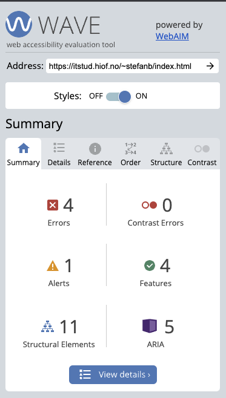

Analyse
Keyword research using Google trends
Search words/key words analyzed by Google trends:
- Sneakers (75)
- Sko herre (70)
- Sko dame (75)
- Adidas (75)
- Nike (80)
- Sko (80)
I have identified the above 6 key words as relevant for this webpage. The online shoe store will primarily sell shoes within Norway. The reasons for choosing these key words are first and foremost because the store sells sneakers and the relatively high search interest numbers for these key words according to Google Trends.

Above: Screenshot from search word "sko", which is a very generic term to include, yet very important to have included as key word since it does not lose popularity with shifting seasons. It has a high score throughout the year.

Above: Screenshot from search word "Sneakers". Very specific term for my webpage, since it specialises in sneakers. However, it does lose popularity throughout the colder months of the year, understandably.
SEO analysis of pages using lighthouse
The SEO analysis was performed via the Google Chrome Lighthouse extension. As specified in the task the page checks were done with only SEO checked. The results were not bad. Screenshots provided below with explanations.
Lighthouse check pre alterations, index.html:
As we can see from the provided screenshot above, the index.html page receives a rating of 90 before any alterations to improve SEO have been made. The only remark made is that the page lacks a meta description
Lighthouse check pre alterations, product.html:
Again a score of 90 pre alterations. Same result, lacking a meta description
Lighthouse check pre alterations, customerService.html:

This time a score of 89, yet results are the same otherwise, lacking a meta description.
UU analysis of pages using WAVE
The accessibility check was performed using webaim.org (WAVE). Only the summary section for each page check will be provided due to extensive length on the detalied version.
WAVE check pre alterations, index.html:
WAVE identifes 4 errors and 1 alert on index.html. The 4 errors are divided into 2 empty links and 2 linked images missing alternative text. Regarding the empty links error: these errors are targeting the icons mangifying glass and the hamburger menu icon. In the index.html these are coded as links but are for the scope of oblig 3 (which is when they were developed) not intented to lead anywhere. Hence the empty link. These errors could easily have been avoided, but for simplicity that is the way it was developed. It was not, and is not, necessary to have them linked anywhere.
WAVE check pre alterations, product.html:

Again, as in index.html, it identifies errors regarding empty links. Again, this is for the sake of simplicity when developing oblig 3. I also get 3 errors regarding very low contrast on my banner where the breadcrumb trail is for displaying where you have navigated to. Last error for contrast is the text "popular brands". I also get 2 alerts. The first is for the fact that the 2 Hoka shoes have the same alt text. Second alert is for the underlined text in the LIMITED EDITION label on the Nike shoe. It should be removed as it indicates that the label is a link, which it technically is not in this case even though the image as a whole is clickable.
WAVE check pre alterations, customerService.html:

Same issues here as in both index and product page. Missing/empty links and contrast error raised for the low contrast text in the search field.
SEO and UU analysis of pages using ChatGPT
Feedback on all three pages from chatGPT regarding SEO:
Index.html
- Title "SnEEkZ" is present, which is good for SEO, but it could be more descriptive of the page content.
- No meta description tag is found which is important for SEO as it describes the page content in search results.
-
Headings are used (
<h1>,<h2>), which is good for SEO structure. - Images have missing alt attributes, which are important for image search optimization.
product.html
- The title tag "Document" is not descriptive and not helpful for SEO.
- No meta description tag is present, missing an opportunity for page summarization in search results.
- Breadcrumb navigation is good for SEO, providing a clear page hierarchy.
-
<h1>tag is used appropriately, aiding in page structure understanding for search engines.
customerService.html
-
Title Tag: The
<title>tag currently says "Document", which is not descriptive and does not contain any keywords related to the business or content of the website. For SEO purposes, this should be a concise and accurate description of the page's content, ideally including relevant keywords. - Meta Description: There is no meta description tag present in the head of the document. A meta description provides a summary of the page content that search engines can display in search results. It should include relevant keywords and a compelling description to encourage click-through.
-
Heading Structure: The use of headings (
h1,h2, etc.) seems to be semantically correct, but it's essential to ensure that they include relevant keywords for SEO. - Alt Text for Images: Icons used in the document (such as those from FontAwesome) do not have alternative text which would describe the image or its function. Although these icons might be decorative, if they convey meaning or action (like the home icon or cart icon), they should have corresponding alt text.
- Content Quality: Since there is very little text content and it’s mostly template-like, it doesn’t offer much for search engines to index. Rich, keyword-optimized, relevant content is crucial for good SEO.
- Link Anchor Text: The links in the document are either icons or generic terms like "See More >". More descriptive link text could help SEO by providing search engines with more context about the linked content.
Feedback on all three pages from chatGPT regarding UU:
index.html
- Some images have empty alt attributes, which is not helpful for screen readers.
- The page uses aria-label appropriately in some links for assistive technologies.
- Semantic HTML5 elements such as <header>, <nav>, <main>, <section>, and <footer> are used properly, enhancing accessibility.
- The page does not contain a <main> landmark until halfway through the document, which could confuse navigation for screen reader users.
- There are potentially more than five <div> elements as specified in the comment, which may not meet the given instructions.
product.html
- Breadcrumb navigation has an aria-label, which is good for screen reader users.
- <aside> tag is used without an accessible name, making it unclear what the content represents for screen reader users.
- Some interactive elements lack accessible names, like the filter button, which can be problematic for screen reader users.
- Text inside the <p> element within the <div id="searchInput"> is not explicitly associated with the search functionality.
customerService.html
- Contrast Ratio: Without seeing the CSS, it’s impossible to evaluate the contrast ratio of the text to the background. High contrast is required for readability for users with visual impairments.
- Accessible Navigation: It appears that there is a separate navigation section for mobile and desktop (id="mobileNavSection" and id="desktopNav"). It is important to ensure that both are fully keyboard navigable and that they work with screen readers without duplicative content that could confuse users.
- ARIA Labels: The use of ARIA attributes like aria-label on the analyze page link is good for conveying the purpose of the link to screen reader users. However, other icon links may also require ARIA labels if the icons have a function or convey a specific meaning.
- Interactive Element Accessibility: Interactive elements such as links and buttons should be accessible with keyboard navigation and provide focus styles to assist users who are not using a mouse.
- Semantic HTML: Use of semantic HTML elements helps screen readers and assistive technologies understand the structure and content of the webpage. It's important to ensure that sections and other elements are used appropriately for their intended purpose.
- Skip Links: There are no skip links, which are helpful for keyboard-only users to bypass repetitive navigation links and quickly access main content.
- Language and Readability: Content should be clear and easily understandable. For example, abbreviations like "$" should be explained or supplemented with text for users who may not understand the symbol.
- Icon Font Fallback: There is a dependency on FontAwesome for icons. If the FontAwesome script fails to load or is blocked, users may not see the icons, potentially reducing the usability of the site. Text alternatives or fallbacks are necessary.
- Document Language: The document declares lang="en" which is good for accessibility, but ensure that any text not in English is appropriately marked with its language attribute.
Table for result comparisons, ChatGPT, Lighthouse, WAVE
| GPT-results | Lighthouse-results | WAVE-results |
|---|---|---|
GPT-feedback on both SEO and UU:
|
Lightouse feedback on SEO:
|
WAVE feedback on accessibility:
|
Alterations and improvements made to enhance SEO and UU:
- Added alt descriptions to all images.
- Added aria attributes to all elements without descriptive label.
- Added meta tags and relevant content within to all pages.
- Altered title to more descriptive name.
- I have tried to fix the empty link error given by WAVE by linking to other parts of the webpage.
- Removed underlined text from limited edition label.
- Added skip-link to main content on all pages.
- Fixed contrast ratio errors by switching to colors with higher contrast for the given background color.
- Added accessible name for aside tag.
- Added descriptive title names to product and customer service page
Testing again after alterations made for better SEO and UU:
Lighthouse testing after improvements:
Above: Lighthouse full score on index page. Improved from before
Above: Lighthouse full score on product page. Improved from before
Above: Lighthouse full score on customer service page. Improved from before